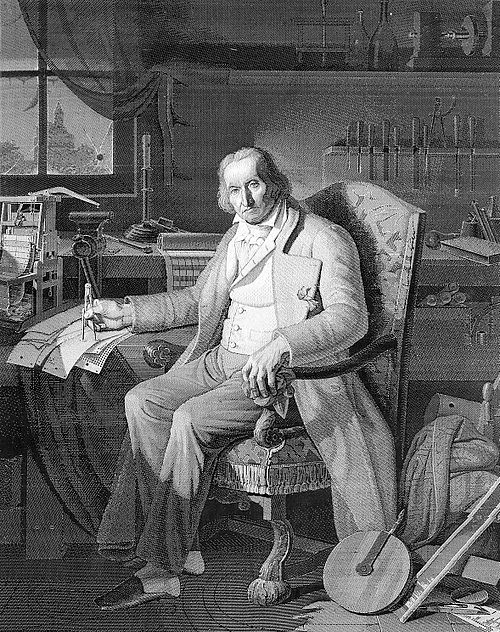
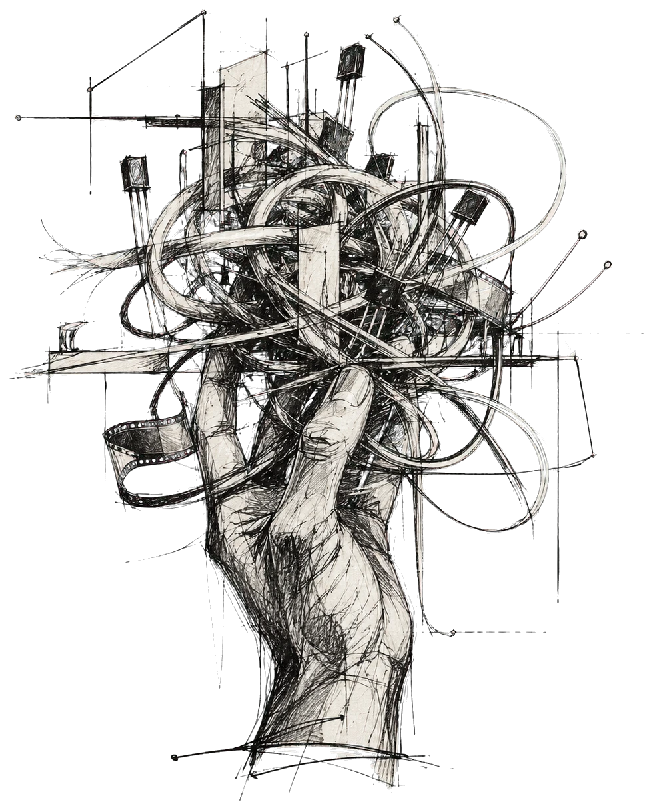

An independent studio of expert designers, filmmakers and engineers who have seen this field change, more than once. We build brands, and the AI and software behind them. Every project starts with a written scope, not a guess.
“We may say most aptly that the Analytical Engine weaves algebraical patterns just as the Jacquard-loom weaves flowers and leaves.”

Woven, not printed. This portrait of Jacquard was woven in silk on a Jacquard loom from 24,000 punched cards.
In 1804, Joseph-Marie Jacquard taught a loom to read. A chain of punched cards decided which threads lifted, and the pattern wove itself. Charles Babbage borrowed the cards for his Analytical Engine; Ada Lovelace wrote a program for it.
We took our name from that moment, when craft became computation. We still work that way: design the pattern first, then let the machine run it.
Our name, encoded in 8-bit binary.
Names, identities, photography, film and websites, made by people, not prompts. Original work from one team, so every piece looks like your brand and no one else’s.
Automated pipelines that write, adapt and publish in your brand’s voice, at volume, with a person approving everything that goes out.
Custom AI built into the way your company already works: agents and assistants on your own documents, automated approvals, and integrations with the systems you run.
The software under it all: backends, APIs and cloud platforms built to scale, tested automatically, and handed over with the code.
Nothing gets built on a hunch. Before we quote or write a line of code, we study the problem and hand you a written scope of work: what we’ll build, what we won’t, how long it takes and what it costs. You sign it before we start.
We learn the business before we read the brief.
Brand, content, data and systems: what exists, and what’s missing.
The written scope and solution architecture: deliverables, timeline, cost, risks. You sign it.
Design, film and engineering in short cycles you can see.
Launch, measure and hand over, or keep us on to improve it.
We don’t keep a gallery of polished mockups. Our work lives in the repository: open it, read it, judge it. Most studios show you screenshots. We’d rather show you commits.
github.com/loomandmachinesIn the field, each of us
No juniors learning on your budget. The people on your first call are the people who design and build your project: designers, filmmakers and engineers with more than ten years in the field, who have built for multinational brands and corporates and watched the industry change more than once. We keep it that way on purpose.

Tell us what’s tangled: the brand, the content, the workflow. We’ll come back with questions first, then a written scope.